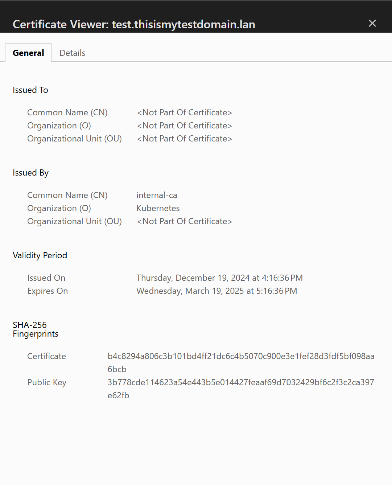

Automated certificate management in local Kubernetes clusters, with local domains
Overview / Requirements / Setup
After setting up external-dns and cert-manager for the hundreth time I thought it’d be fun to add some functionality to my homelab cluster and have proper signed certs there. This blog post is a basic outline of how to setup cert-manager to sign certificates using a certificate and key provided from an intermediary CA.
I’m using pfSense to both provide DNS to my .lan domain and generate the root and intermediary CA certs, you can use whatever platform you’d like but the steps outlined here use pfSense.
This blog post assumes some familiarity with topics like Kubernetes, DNS, and TLS certificates, and I don’t go into how to setup your own .local/.lan domain or how to install an ingress controller on your cluster.
The hardware: A small 2-node k8s cluster running on Raspberry Pis
The software:
- Pfsense: This is what I’m using to generate the root and intermediary certificates
- Cert-manager: This will take the intermediary certificate generated in Pfsense and use that to generate certs for all the applications we use in our cluster
- nginx ingress controller: This is used to manage cluster ingress to applications, and what cert-manager will watch for needed certificates
Configuring pfSense
Location: https://<your-pfsense-instance>/system_camanager.php
Configuring the Root CA
First we configure the Root CA. From the above URL in the Authorities tab, click on + Add at the bottom.
The Method needs to be Create an internal Certificate Authority. All of the other settings can be whatever you’d like.
This is the certificate you’ll install in your Operating System, docs on that here: https://superuser.com/questions/463081/adding-self-signed-certificate-to-trusted-root-certificate-store-using-command-l
Configuring the Intermediary CA for Kubernetes
In the same page as before, in the Authorities tab, click + Add again, this time Method needs to be Create an intermediate Certificate Authority.
Make sure your Signing Certificate Authority is the Root CA you created in the previous step.
Creating manual certificates
In your Certificates tab you can now create manual certificates if you’d like.
For example to create one for pfSense itself you can click + Add, fill out any of the details you’d like, making sure the Common Name is the domain name you’re using for pfSense, eg: pfsense.yourdomain.lan.
At the bottom you want to choose Server Certificate.
You can now enable your certificate for the pfSense web portal in the General Setup page located here: https://<your-pfsense-instance>/system_advanced_admin.php
Assuming you’ve installed the root certificate you should be able to browse to your pfSense website without ssl certificate errors now.
Installing cert-manager for Kubernetes
Easiest way to install cert-manager is to use Helm
- helm repo add jetstack https://charts.jetstack.io
- kubectl create namespace cert-manager
- helm upgrade –install cert-manager jetstack/cert-manager –namespace cert-manager –set crds.enabled=true
Alternatively you can follow instructions on their website for other methods here: https://cert-manager.io/docs/installation/
Configuring cert-manager1
Now that we’ve got cert-manager and all the Custom Resource Definitions setup we can configure our Certificate Authority for signing tls certs.
-
Download the certificate and key for the Intermediary CA you setup in pfSense (or other platform you used)
-
Base64 encode the certificate and key.2
- You can use
cat certificate.pem | base64 -w0on GNU-based systems - You can use
cat certificate.pem | base64 -b0on BSD-based systems (MacOS falls here)
- You can use
-
Create a Kubernetes secret containing your new base64 encoded data
apiVersion: v1
kind: Secret
metadata:
name: cert-manager-signing-creds
namespace: cert-manager
data:
tls.crt: <base64 encoded cert>
tls.key: <base64 encoded key>
- Use kubectl to apply the new secret:
kubectl apply -f mySecretName.yaml - Create a cert-manager issuer that uses that secret
apiVersion: cert-manager.io/v1
kind: ClusterIssuer
metadata:
name: ca-issuer
namespace: cert-manager
spec:
ca:
secretName: cert-manager-signing-creds
- Use kubectl to apply the new issuer:
kubectl apply -f myCertIssuer.yaml
Configuring a service to use the cert
The easiest way to test this is to configure a basic http service
apiVersion: apps/v1
kind: Deployment
metadata:
labels:
app: http-service
name: http-service
spec:
replicas: 1
selector:
matchLabels:
app: http-service
template:
metadata:
labels:
app: http-service
spec:
containers:
- image: mccutchen/go-httpbin:latest
name: httpbinz
ports:
- containerPort: 8080
---
apiVersion: v1
kind: Service
metadata:
labels:
app: http-service
name: http-service
namespace: test-ns
spec:
ports:
- port: 8080
protocol: TCP
targetPort: 8080
selector:
app: http-service
---
apiVersion: networking.k8s.io/v1
kind: Ingress
metadata:
name: http-service
annotations:
cert-manager.io/cluster-issuer: ca-issuer
spec:
ingressClassName: nginx
tls:
- hosts:
- test.mydomain.lan
secretName: testapp-tls # This will be auto created by cert-manager
rules:
- host: "test.mydomain.lan"
http:
paths:
- path: /
pathType: Prefix
backend:
service:
name: http-service
port:
number: 8080
- Apply this file with
kubecyl apply -f myTestService.yaml- Note: If you’re not using nginx as an ingress controller you may have to alter the above ingress
Finished
All said and done, you should now be able to hit a local domain that points to a service in your Kubernetes cluster and have a valid certificate. 